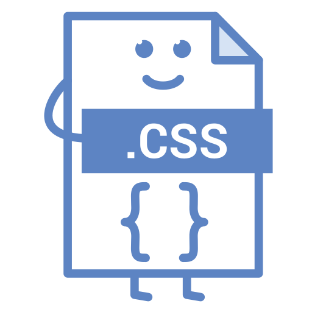

What is CSS?
CSS (Cascading Style Sheets) is a language used to style and layout web pages. It allows you to change colors, fonts, spacing, and more, creating visually appealing and responsive designs. With CSS, you can transform basic HTML into a beautifully styled website, making it an essential skill for web development. Types of Styling
Styling 1: Basic Text Styling
In this style, we add simple text styling with color, font size, and text decoration to create a clean and readable paragraph.
Styling 2: Border and Padding
This style showcases how to add borders and padding to separate content visually, creating structured layouts.
Styling 3: Background and Shadow
Here, we add a background color and shadow to the element, giving it depth and making it stand out on the page.
Styling 4: Text Alignment
Using text alignment to center, left, or right align text can create a different visual hierarchy.
Styling 5: Font Family and Letter Spacing
This style uses a different font family to show how font choice can affect readability and tone.
Styling 6: Margin and Padding
Adding margin and padding can create spacing around elements, improving layout structure.
Styling 7: Transform and User Interaction
This style applies transformation and user-select properties to control how the text behaves on interaction.